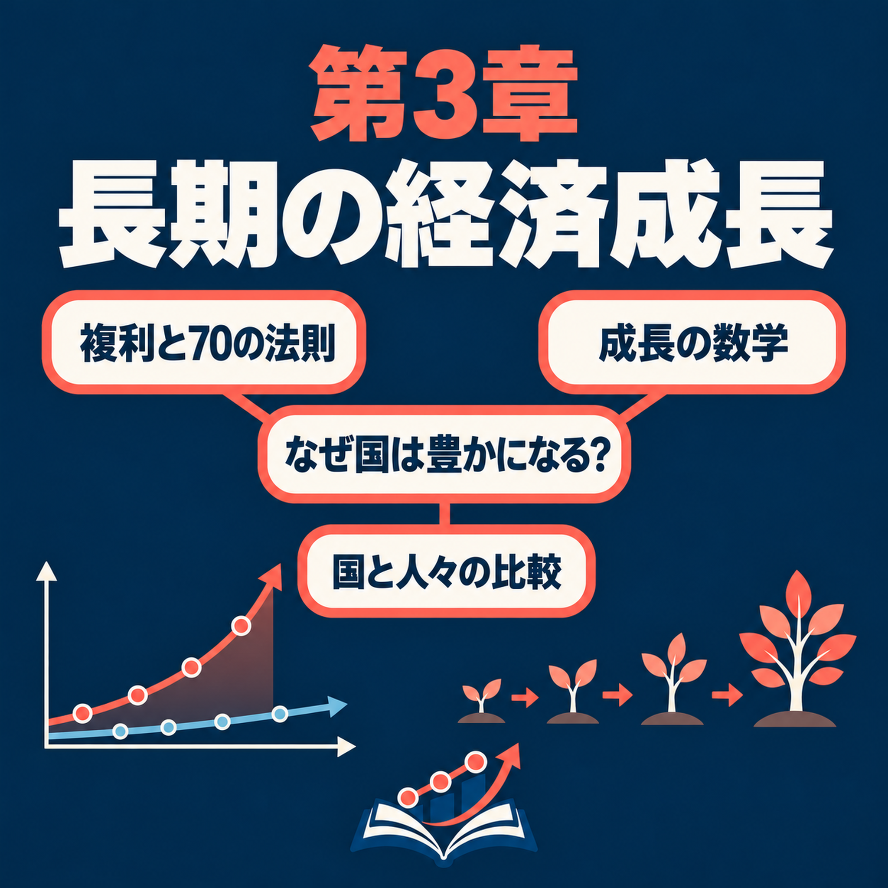

Host · 司会者ch03-t001
Welcome back. Today we are on long-run economic growth: how living standards rise over decades and centuries. Let's start with a guessing game.
今回もよろしくお願いします。今日は、長期的な経済成長、つまり、何十年、何百年という時間をかけて生活水準がどう上がってきたかを取り上げます。まずは当てっこから始めましょう。
Carlos Mendez · 日本語版 · Chapter 3
英語原文と日本語訳を、音声に合わせて確認できます。

まず音声を聞き、必要に応じて英語原文と日本語訳を見比べてください。日本語能力試験N2程度の学習者を想定しています。専門用語はN2の範囲を超える場合があります。
English and Japanese passages follow the recording's speaker turns and section order. The Japanese is a draft translation reviewed for structure and key economic details; it has not been certified by a native-language editor.
Welcome back. Today we are on long-run economic growth: how living standards rise over decades and centuries. Let's start with a guessing game.
今回もよろしくお願いします。今日は、長期的な経済成長、つまり、何十年、何百年という時間をかけて生活水準がどう上がってきたかを取り上げます。まずは当てっこから始めましょう。
Okay. I'll describe a country, and you tell me which one it is. A baby born there can expect to live less than 50 years. 1 baby in 10 dies before its first birthday. More than 90 percent of homes have no electricity, no fridge, no phone and no car.
いいですね。ある国について説明するので、どの国か当ててください。そこで生まれた赤ちゃんの平均余命は50年未満です。生まれた赤ちゃんの10人に1人は、1歳の誕生日を迎える前に亡くなります。家庭の90％以上には、電気も冷蔵庫も電話も車もありません。
That sounds like one of the poorest countries in the world today.
今の世界で、最も貧しい国の一つのように聞こえます。
Good guess, but no. It's the United States, more than a hundred years ago, around 1900. Growth changed that country completely. But many other countries did not have that growth.
いい推測ですが、違います。100年以上前、1900年ごろのアメリカです。経済成長が、この国をまったく違う国に変えました。しかし、同じように成長しなかった国もたくさんあります。
So here is today's question. Why are some countries so much richer than others, and how do we read growth from the data?
では、今日の問いです。なぜ、ほかの国よりずっと豊かな国があるのでしょうか。そして、データから成長をどう読み取ればよいのでしょうか。
By the end of this episode, you'll be able to do three things. First, describe how recent lasting growth is, and explain how it opened huge gaps between countries. Second, use two simple tools. The Rule of 70 tells you how long an income takes to double. The growth rules split total growth into growth per person and population growth. Third, explain why growing a little faster each year, kept up for decades, separates rich countries from poor ones.
今回のエピソードを聞き終わるころには、三つのことができるようになるはずです。一つ目は、最近になって持続的な成長が始まったことを説明し、それによって国同士に大きな格差が生まれた理由を説明することです。二つ目は、二つの簡単な道具を使うことです。70の法則を使うと、所得が2倍になるまでの期間が分かります。成長の法則を使うと、経済全体の成長を、1人あたりの成長と人口の増加に分けられます。三つ目は、毎年少しだけ高い成長率を何十年も保つことが、豊かな国と貧しい国を分ける理由を説明することです。
And we'll follow the chapter's mind map part by part?
章のマインドマップに沿って、順番に見ていくのですね。
Yes. The map has three parts, or branches. Part one gives the long-run facts. Part two builds the mathematics of growth. Part three compares countries and people. Each part has a few leaves, small topics we take in order.
はい。マップには三つの部、つまり枝があります。第1部では長期的な事実、第2部では成長の数学、第3部では国や人々の比較を扱います。各部にはいくつかの葉、小さな項目があり、順番に取り上げていきます。
Part one of the map: The long-run facts. The first leaf says sustained growth is recent. What do we measure, and what does sustained mean?
マップの第1部、「長期的な成長の事実」です。最初の項目は、持続的な成長は最近になって始まった、というものです。何を測り、「持続的」とはどういう意味でしょうか。
We measure living standards with GDP per person. GDP, or gross domestic product, is the value of all the final goods and services a country produces in a year. Final means bought by the people who use them, like bread, not the flour inside it. Divide GDP by the number of people, and you get average income per person. Sustained growth means that this income rises year after year, for a long time.
生活水準は、1人あたりGDPで測ります。GDP、つまり国内総生産は、その国が1年間に生産する最終財・サービスの価値です。最終というのは、パンの中に使われた小麦粉ではなく、パンのように、使う人が買うものを指します。GDPを人口で割ると、1人あたりの平均所得が求められます。持続的な成長とは、この所得が長い間、毎年上がり続けることです。
Okay. Then over the last 2,000 years, my guess is that income per person grew slowly and steadily the whole time.
なるほど。では、過去2,000年間、1人あたり所得はゆっくりと、ずっと安定して伸びてきたと思います。
That's what most people guess, but it's wrong. For almost all of history, income per person stayed close to the level where people can barely survive. Then, only in the last two or three centuries, it climbed very fast. People call this shape a hockey stick: a long flat handle, then a sharp turn upward at the end.
多くの人がそう考えますが、違います。人類の歴史のほとんどで、1人あたり所得は、人々が何とか生きていける水準の近くにとどまっていました。それが、わずかここ2、3世紀の間に、急速に上がったのです。この形は「ホッケースティック型」と呼ばれます。長い間は平らな持ち手のように進み、最後に急に上向く形です。
So for most of history, people lived about as well as their great-grandparents.
歴史の大部分では、人々の暮らしは、ひいおじいさんやひいおばあさんの時代とあまり変わらなかったのですね。
Exactly. Our imaginary island country, Islandia, has the same story. For most of its history, income per person on the island barely changed. Then it began to rise a little every year, and it has kept rising ever since.
そのとおりです。架空の島国アイランディアも同じです。島の歴史のほとんどで、1人あたり所得はほとんど変わりませんでした。その後、毎年少しずつ上がり始め、それ以来、ずっと上がり続けています。
How big is the rise in a real country?
実際の国では、どれくらい上がったのでしょうか。
Take the United Kingdom. In 2022, its income per person was 33 times its level in the year 1, about 2,000 years ago.
イギリスを見てみましょう。2022年の1人あたり所得は、およそ2,000年前の西暦1年の水準の33倍でした。
And when did most of that rise happen?
その上昇の大部分は、いつ起きたのですか。
Almost all of it came after 1800. Why it started then is still debated, and Chapter 6 comes back to it. But we know it did not start everywhere at once. It came first to the United Kingdom and the United States, later to Japan and Argentina, and to China only in recent decades. In Ghana, the rise has been much smaller.
ほとんどすべてが1800年以降です。なぜそのころ始まったのかについては、今も議論があります。この点は第6章で改めて取り上げます。ただ、すべての国で一斉に始まったわけではありません。まずイギリスとアメリカで始まり、その後、日本とアルゼンチンへ広がりました。中国では、ここ数十年になって始まったばかりです。ガーナの上昇は、ずっと小さいものでした。
That brings us to the next leaf: the Great Divergence. Divergence means moving apart, right?
次の項目は「大分岐」です。分岐とは、離れていくという意味ですね。
Right. Before 1700, the richest countries were probably at most 2 or 3 times as rich as the poorest. Then growth started at different times in different places. Each early starter kept growing, so small gaps became huge ones.
そのとおりです。1700年より前は、最も豊かな国でも、最も貧しい国の2倍か3倍程度だったと考えられます。その後、場所によって異なる時期に成長が始まりました。早く始めた国は成長を続けたので、小さかった格差が非常に大きくなりました。
How huge?
どれくらい大きくなったのでしょうか。
In 2022, income per person in Ghana was about one fourteenth of the U.S. level. In other words, the average American was about 14 times as rich as the average person in Ghana. This widening of the gaps is what economists call the Great Divergence.
2022年、ガーナの1人あたり所得は、アメリカの約14分の1でした。言い換えると、アメリカ人の平均所得は、ガーナの人の平均所得の約14倍でした。このように格差が広がったことを、経済学者は「大分岐」と呼びます。
Next leaf: U.S. GDP per person since 1870. How much richer is an American today?
次は、1870年以降のアメリカの1人あたりGDPです。今のアメリカ人は、どれほど豊かになったのでしょうか。
In 1870, GDP per person in the United States was 4,634 dollars a year. Both numbers I'll give you use the same prices, so they compare what people could really buy.
1870年のアメリカの1人あたりGDPは、年4,634ドルでした。これからお伝えする二つの金額は、同じ価格で測っています。つまり、人々が実際に買えるものを比べられます。
And in 2022?
そして、2022年にはどうなりましたか。
77,942 dollars. That's almost 17 times as much. And over time, the yearly rise in dollars kept getting bigger.
77,942ドルです。ほぼ17倍です。そして時がたつにつれ、毎年増える金額も大きくなっていきました。
So U.S. growth has been speeding up.
ということは、アメリカの成長は加速しているのですね。
A lot of students think that, but not really. The percentage rise stays roughly the same, around 2 percent a year. 2 percent of a large income is simply more dollars than 2 percent of a small income.
多くの学生がそう考えますが、実際にはそうではありません。増加率はおおむね一定で、年約2％です。所得が大きければ、その2％は、所得が小さい場合の2％より多くのドルに相当します。
So in part one we saw that lasting growth is new in history. It began at different times in different places, and that turned small gaps into huge ones. And in the U.S., a steady rate of about 2 percent a year made income almost 17 times as large since 1870.
つまり第1部では、持続的な成長は歴史上のごく最近になって始まったこと、場所によって始まる時期が違い、小さな格差が非常に大きくなったことを見ました。アメリカでは年約2％の安定した成長により、1870年以降、所得はほぼ17倍になりました。
Yes. Next branch: the mathematics that turns a small rate into such a big change.
はい。次の枝では、小さな成長率が非常に大きな変化を生む数学を見ていきます。
Part two of the map: The mathematics of growth. The first leaf is the constant growth rule, the equation for steady growth. Let's start simple. What is a growth rate?
マップの第2部、「成長の数学」です。最初の項目は一定成長の法則、つまり安定した成長を表す方程式です。まずは基本から始めましょう。成長率とは何ですか。
A growth rate is a percentage change: how much something changed in a year, divided by where it started. Let's go back to Islandia. Today each islander earns 6 units of the goods the island makes, and income grows by 2 percent a year.
成長率とは、変化率のことです。あるものが1年間にどれだけ変わったかを、変化が始まる時点の値で割って求めます。アイランディアに戻りましょう。現在、島民1人あたりの所得は、島で生産される財で測ると6単位です。所得は毎年2％ずつ成長します。
So what happens in the first year?
最初の1年で、何が起こりますか。
Income gains 2 percent of 6, which is 0.12. So after one year, income is 6.12.
所得は6の2％、つまり0.12だけ増えます。したがって、1年後の所得は6.12です。
And the year after?
その次の年はどうなりますか。
Again 2 percent, but now of 6.12, so the gain is a little bigger. Each year, you multiply income by 1.02, which is one plus the growth rate. Do that once for each year, and you have the constant growth rule.
今度も2％ですが、6.12の2％です。ですから、増加分は少し大きくなります。毎年、所得に1.02、つまり1に成長率を足した数を掛けます。これを1年ごとに繰り返すと、一定成長の法則になります。
Let me guess where Islandia is after a century. The gain grows only a tiny bit each year, so let's say 0.12 a year. A century adds about 12. My guess is 18.
1世紀後のアイランディアを当ててみましょう。毎年の増加分はほんの少しずつ大きくなるだけなので、毎年0.12増えるとします。100年間で約12増えるので、答えは18だと思います。
That's the natural guess, but it's far too low. 18 is what you get if every year adds the same amount. With a constant growth rate, each year's gain is taken of a bigger income, because last year's gain is now part of it. Economists call this compounding. After 100 years, Islandia's income is 43.5 units.
自然な推測ですが、かなり低すぎます。毎年同じ金額が増えると考えた場合の答えが18です。一定の成長率では、前年の増加分が所得に加わるので、その年の増加分は、前年より大きな所得に対して計算されます。経済学者はこれを複利と呼びます。100年後、アイランディアの所得は43.5単位になります。
43.5! That's more than seven times where it started.
43.5ですか。出発点の7倍以上ですね。
Right. On an ordinary chart, that path bends upward more and more steeply. Next leaf: the ratio scale, another way to draw growth. On an ordinary chart, each equal step up adds the same amount: one, two, three, four. On a ratio scale, each equal step multiplies by the same amount: one, two, four, eight.
そのとおりです。普通のグラフで表すと、時間がたつにつれて、線はますます急に上向きます。次の項目は比率目盛りです。成長を描くもう一つの方法です。普通のグラフでは、同じ幅だけ上がると、1、2、3、4のように同じ量が足されます。比率目盛りでは、同じ幅だけ上がると、1、2、4、8のように同じ倍率が掛けられます。
So on a ratio scale, Islandia's income still curves upward?
比率目盛りでも、アイランディアの所得は上向きに曲がった線になるのですか。
No, it becomes a straight line. Under steady growth, income doubles again and again, at regular intervals. So it climbs one equal step in each interval. And a steeper line means faster growth.
いいえ、直線になります。一定の成長率では、所得は一定の間隔で何度も2倍になります。つまり、間隔ごとに同じ幅だけ上がります。線が急であるほど、成長率は高いということです。
And how long is each interval? Is that the next leaf, the Rule of 70?
その間隔は何年ですか。次の項目、70の法則ですね。
Yes. Divide 70 by the growth rate, in percent. For Islandia, 70 divided by 2 gives 35 years. That's how long its income takes to double.
はい。成長率をパーセントで表し、70をその成長率で割ります。アイランディアの場合、70を2で割ると35年です。つまり、所得が2倍になるまで35年かかります。
Why 70, and not some other number?
なぜ70なのですか。ほかの数字ではだめなのでしょうか。
At 1 percent a year, doubling takes almost exactly 70 years. Without compounding, it would take 100 years, but each year's gain also grows. If you grow twice as fast, doubling takes half as long.
年1％の成長率なら、所得が2倍になるまでほぼ正確に70年かかるからです。複利がなければ100年かかりますが、毎年の増加分も大きくなるので、それより短くなります。成長率が2倍になると、2倍になるまでの期間は半分になります。
Next leaf: the U.S. since 1870, about 2 percent a year. What does that mean?
次の項目は1870年以降のアメリカです。年約2％の成長率とは、どういう意味でしょうか。
Something remarkable. On a ratio scale, U.S. income since 1870 stays close to a straight line, with growth of about 2 percent a year, for more than 150 years.
驚くべきことです。比率目盛りで見ると、1870年以降のアメリカの所得は、年約2％の成長を150年以上続け、ほぼ直線に沿って伸びています。
Even through wars and the Great Depression, the deep economic crisis of the early 1930s?
戦争や、1930年代初めの深刻な経済危機である大恐慌の時期もですか。
Yes. The Great Depression and World War Two cause large swings, but the path comes back close to the same line. Look closely, and growth was a little slower before 1929 and a little faster in the decades after 1950. The exact average since 1870 is 1.88 percent a year.
はい。大恐慌と第二次世界大戦の時期には大きな変動がありましたが、成長の経路は、ほぼ同じ線に戻ります。よく見ると、1929年より前は成長が少し遅く、1950年以降の数十年間は少し速くなりました。1870年以降の正確な平均成長率は、年1.88％です。
Still on this leaf: where does an exact number like 1.88 come from, when the data go up and down?
この項目でもう一つ。データが上下するのに、1.88％のような正確な数字はどうやって求めるのですか。
From the average growth rate. You use only the first value and the last value. You ask: what one steady yearly rate would take you from the first to the last in the same number of years? You can't just divide the total rise by the number of years, because growth compounds. Take Islandia's century. Its income went from 6 to 43.5, so it became about 7.2 times as large.
平均成長率から求めます。最初の値と最後の値だけを使います。最初の値から最後の値までを、同じ年数で増やすには、毎年どれほど一定の成長率で成長すればよいかを考えます。成長は複利で増えるので、全体の増加分を年数で割るだけでは求められません。アイランディアの1世紀を考えましょう。所得は6から43.5になり、約7.2倍になりました。
And then?
それから、どうするのですか。
Then ask: what number, multiplied by itself 100 times, gives 7.2? The answer is 1.02. Take away the one that stands for the starting income, and 2 percent a year is left.
100乗すると7.2になる数を求めます。答えは1.02です。最初の所得を表す1を引くと、年2％の成長率が残ります。
Islandia has good years and bad years too. Say, just for this example, a good year raises income by 20 percent, and then a bad year cuts it by 20 percent. On average that's zero, so islanders are back where they started.
アイランディアにも、よい年と悪い年があります。この例では、よい年に所得が20％増えて、その次の悪い年に20％減るとしましょう。平均するとゼロだから、島民の所得は元に戻ります。
Let's test it with simple numbers. Start at 100. A 20 percent rise takes you to 120.
簡単な数字で確かめましょう。100から始めます。20％増えると120になります。
And the 20 percent fall takes me back to 100.
そして20％減れば、100に戻るということですね。
That's a common mistake. The fall hits a bigger income than the rise did. 20 percent of 120 is 24, so you end at 96.
よくある間違いです。20％の減少は、増加した後の大きな所得に対して起こります。120の20％は24ですから、最後の所得は96です。
So islanders end 4 percent poorer. What's the average growth rate, then?
では、島民は4％貧しくなりますね。平均成長率はどれくらいですか。
Use the same method. It gives about minus 2 percent a year, not zero. A 2 percent fall, two years in a row, also takes 100 to about 96.
同じ方法で求めると、年平均約マイナス2％です。ゼロではありません。2年続けて2％ずつ減る場合も、100は約96になります。
Last leaf of this part: growth rules. What are they?
この部の最後の項目は、成長の法則です。どのような法則ですか。
When you multiply two things, their growth rates add. When you divide one thing by another, their growth rates subtract. Total GDP is GDP per person times the number of people. It grows for two reasons at once: each person produces more, and there are more people. So total GDP grows at about the sum of those two growth rates.
二つのものを掛け合わせると、それぞれの成長率が足し合わされます。一方をもう一方で割ると、成長率は引き算になります。経済全体のGDPは、1人あたりGDPに人口を掛けたものです。成長には、一人ひとりがより多く生産することと、人口が増えることの二つの理由があります。ですから、経済全体のGDPは、およそこの二つの成長率を足した分だけ成長します。
Can we check it with the U.S.?
アメリカの数字で確かめられますか。
Since 1870, U.S. GDP per person grew 1.88 percent a year. The population grew 1.39 percent a year.
1870年以降、アメリカの1人あたりGDPは、年1.88％成長しました。人口は年1.39％増えました。
So total GDP grew about 3.3 percent a year, the sum.
すると、全体のGDPは、その合計である年約3.3％成長したのですね。
Very close. The data say 3.29 percent a year. The rule is not exact, because each year's growth compounds a little, but for small rates the gap is tiny.
かなり近いです。データでは、年3.29％です。毎年の成長が複利で増えるため、この法則は正確ではありません。ただし、成長率が小さければ、その差はごくわずかです。
And the rule for dividing?
割り算の法則はどうですか。
Income per person is total GDP divided by the number of people. So its growth rate is GDP growth minus population growth. Take Niger, one of the poorest countries in the world. Since 1950, its GDP grew 2.9 percent a year, but its population grew 2.8 percent a year. So income per person barely changed, even though GDP grew fast.
1人あたり所得は、経済全体のGDPを人口で割ったものです。ですから、その成長率は、GDPの成長率から人口の増加率を引いたものです。世界で最も貧しい国の一つ、ニジェールを見てみましょう。1950年以降、GDPは年2.9％成長しましたが、人口は年2.8％増えました。ですから、GDPは速く成長していても、1人あたり所得はほとんど変わりませんでした。
So in part two we built a toolkit for reading growth. Steady growth compounds, and 70 divided by the growth rate gives the doubling time. On a ratio scale, it's a straight line, like U.S. income at about 2 percent a year. The first and last values give the average rate. And growth rates add when we multiply and subtract when we divide.
つまり第2部では、成長を読み解くための道具を作りました。安定した成長は複利で増え、成長率で70を割ると、2倍になるまでの期間が求められます。比率目盛りでは直線になり、年約2％で成長するアメリカの所得がその例です。最初と最後の値から平均成長率が分かります。そして、掛け算では成長率が足され、割り算では引かれます。
Right. Next branch: what these tools show when countries grow at different rates.
そのとおりです。次の枝では、国によって成長率が異なると、これらの道具から何が分かるのかを見ていきます。
Part three of the map: Across countries and people. The first leaf is catch-up. What does that mean?
マップの第3部、「国と人々の比較」です。最初の項目は追い上げです。どういう意味ですか。
Catch-up means a poorer country grows faster than a richer one, so it closes part of the gap. Economists also call it convergence. South Korea is a famous example. In 1950, its income per person was only 7 percent of the U.S. level.
追い上げとは、貧しい国が豊かな国より速く成長し、格差の一部を縮めることです。経済学者は収束とも呼びます。韓国は有名な例です。1950年の韓国の1人あたり所得は、アメリカの水準のわずか7％でした。
And by now?
今はどうですか。
By 2022, it was 71 percent. Korea grew so much faster than the United States that it closed most of the gap. Japan did something similar after World War Two.
2022年には71％になりました。韓国はアメリカよりずっと速く成長し、格差の大部分を縮めたのです。日本も第二次世界大戦後、同じような成長を遂げました。
So poor countries naturally grow faster. Give them time, and they all catch up.
ということは、貧しい国は自然に速く成長するのですね。時間がたてば、どの国も追いつくのでしょう。
Look at Argentina. It grew well until about 1980, then slowly, and it fell behind. So no: catch-up happens, but not automatically, and not everywhere. And since 1960, poor countries as a group did not grow faster than rich ones on average.
アルゼンチンを見てください。1980年ごろまでは順調に成長しましたが、その後はゆっくりになり、ほかの国に遅れました。ですから、追い上げは起こりますが、自動的に起こるわけでも、どこでも起こるわけでもありません。また、1960年以降、貧しい国々は、グループ全体で見ると、豊かな国々より速く成長したわけではありません。
Did some countries actually get poorer?
実際に貧しくなった国もあるのですか。
Yes, a few, like the Democratic Republic of the Congo. But since 2000, many poor countries have grown as fast as rich ones, or faster.
はい。コンゴ民主共和国など、いくつかの国があります。ただし、2000年以降は、多くの貧しい国が、豊かな国と同じくらい、またはそれ以上に速く成長しました。
Next leaf: Singapore, and how small gaps in growth compound. What counts as a small gap here?
次の項目は、シンガポールと、成長率の小さな差が複利でどう積み重なるかです。ここでいう小さな差とは、どれくらいですか。
Here the gap is a difference in growth rates, not in income. Since 1960, most countries grew between 1 and 3 percent a year.
ここでの差は、所得ではなく成長率の差です。1960年以降、ほとんどの国は、年1％から3％の間で成長しました。
Can such small differences really matter that much?
そんな小さな違いが、そこまで大きな差になるのですか。
Over decades, they can. Look at Singapore. It grew 5.9 percent a year, several percentage points faster than most countries. A percentage point is the step from 2 percent a year to 3 percent a year. Singapore's income became about 36 times as large.
何十年も続けば、大きな差になります。シンガポールを見てみましょう。シンガポールは年5.9％成長し、ほとんどの国より数パーセントポイント速く成長しました。1パーセントポイントとは、年2％から年3％へ上がるときの差です。シンガポールの所得は約36倍になりました。
36 times! How does 5.9 percent turn into that?
36倍ですか。年5.9％の成長で、どうしてそこまで増えるのでしょうか。
Let's build that number step by step. First, the doubling time. 70 divided by 5.9 is about 12.
一つずつ考えていきましょう。まず、所得が2倍になるまでの期間です。70を5.9で割ると、約12年です。
So Singapore's income doubled about every 12 years. How many doublings is that?
すると、シンガポールの所得は約12年ごとに2倍になったのですね。何回、2倍になったのでしょうか。
The data cover 63 years. Five doublings take five times 12 years, which is 60 years. So there's time for a bit more than five doublings.
データは63年間を対象にしています。5回2倍になるには、12年の5倍、つまり60年かかります。ですから、5回を少し超えて2倍になる時間があります。
And what do five doublings give?
5回2倍になると、何倍になりますか。
Each doubling multiplies income by 2. After two doublings, income is 4 times as large. After three, 8 times.
2倍になるたびに、所得は2倍になります。2回2倍になると4倍、3回では8倍です。
Then 16 times after four doublings, and 32 times after five.
では、4回で16倍、5回で32倍ですね。
Exactly. The few extra years add a little more. The exact figure in the data is 36 times, so the shortcut gets us close. In Singapore, young adults today are many times richer than their grandparents were at the same age. In Madagascar, people are slightly poorer. That's the difference that a few percentage points of growth a year can make.
そのとおりです。残りの数年間で、もう少し大きくなります。データ上の正確な値は36倍ですから、この近道でもかなり近い値が出ます。シンガポールの若者は、同じ年齢の祖父母より、何倍も豊かです。一方、マダガスカルの人々は、少し貧しくなっています。年数パーセントポイントの成長率の差が生むのは、こうした違いです。
Next leaf: counting people, and the share below the poverty line. Haven't we been counting people all along?
次の項目は、人々を数えて、貧困線を下回る人の割合を見ることです。これまでも人々を数えてきたのではありませんか。
Not quite. So far, each country counted once. China, with more than a billion people, counted the same as a tiny country. Now every person counts equally. We draw a very low poverty line: an average income of about 3,400 dollars a year per person. Then we ask what share of the world's people live in countries below it.
少し違います。これまでは、国を一つずつ同じ重みで数えていました。人口が10億人を超える中国も、とても小さな国も、同じ一つとして数えていました。今度は一人ひとりを同じ重みで数えます。1人あたりの平均所得が年間約3,400ドルという、非常に低い貧困線を引きます。そして、世界の人々のうち、所得がこの線を下回る国に住む人の割合を調べます。
Poverty is always in the news. So my guess is that the share of poor people has barely fallen.
貧困はよくニュースになります。ですから、貧しい人々の割合はほとんど下がっていないと思います。
The data show the opposite. In 1960, 69 percent of the world's people lived below that line.
データは反対のことを示しています。1960年には、世界の人々の69％がこの線を下回っていました。
And in 2019?
2019年にはどうなりましたか。
Only 8.5 percent. The fall was slow until about 1990, and very fast after that. That's mostly China and India. Together they are home to more than a third of the world's people, and their fast growth moved hundreds of millions above the line.
わずか8.5％でした。1990年ごろまではゆっくり下がり、その後、とても速く下がりました。その大部分は中国とインドによるものです。世界の人々の3分の1以上がこの二つの国に暮らしており、両国の急速な成長によって、何億人もの人々の所得が貧困線を上回りました。
Is there a problem with this way of counting?
この数え方に問題はありますか。
One caution. It uses each country's average income, so it ignores inequality inside countries. Surveys of households tell the same broad story, though: a large fall in poverty since 1990.
注意点が一つあります。国ごとの平均所得を使うので、国内の格差は無視しています。それでも、家計調査を使っても、大まかには同じことが分かります。1990年以降、貧困は大きく減りました。
Last leaf: can policy start growth, and at what cost?
最後の項目は、政策で成長を始められるか、そしてその費用は何か、です。
The economist Robert Lucas asked a famous question about India. Is there something its government could do to make India grow like the fastest growers? If so, what exactly?
経済学者のロバート・ルーカスは、インドについて有名な問いを立てました。政府が何かをして、インドを最も急速に成長する国々のように成長させることはできるのでしょうか。できるなら、具体的に何をすればよいのでしょうか。
So what does the evidence say?
証拠からは、何が分かりますか。
Growth take-offs, when growth speeds up by at least two percentage points for eight years or more, are common. Keeping them going for decades is rare.
成長の離陸、つまり、成長率が少なくとも2パーセントポイント上昇し、それが8年以上続くことは、よくあります。しかし、その成長を何十年も続けるのはまれです。
So what did the fast growers do?
急速に成長した国々は、何をしたのでしょうか。
They usually invested a lot, opened up to trade and kept their economies stable. Rules that protect property and contracts, what economists call institutions, matter in the long run. But the question is still debated. Most take-offs follow no clear change in policy, so luck plays a role. And what works in one country often fails in another.
多くの場合、たくさん投資し、貿易を自由化し、経済を安定させました。財産や契約を守るルール、経済学者が制度と呼ぶものは、長い目で見ると重要です。ただし、この問いには今も議論があります。成長の離陸のほとんどは、政策に明確な変化がないまま起きているので、運も関係します。また、ある国でうまくいったことが、別の国では失敗することもよくあります。
And the cost? More growth means more pollution, doesn't it?
成長の費用はどうでしょう。成長が進めば、汚染も増えるのではありませんか。
Growth does have costs: pollution, using up natural resources, and climate change. Local pollution often gets worse early in development and then better as incomes rise. London's smog, a thick fog of smoke, was deadly for many decades. Today London's air is far cleaner.
成長には費用もあります。汚染、天然資源の枯渇、気候変動です。地域の大気汚染は、発展の初期には悪化し、所得が上がると改善することがよくあります。ロンドンのスモッグ、つまり煙の濃い霧は、何十年にもわたって多くの人の命を奪いました。現在のロンドンの空気は、ずっときれいです。
So pollution goes away by itself as countries get richer?
国が豊かになれば、汚染は自然に消えるということですか。
Not by itself. The cleaner air came from rules and regulation. And the gases that warm the planet harm everyone, not only the country that produces them. Still, most economists who study these costs think the benefits of growth are larger. In the poorest countries, the main problem is too little growth, not too much.
自然に消えるわけではありません。空気がきれいになったのは、ルールと規制があったからです。また、地球を温暖化させるガスは、それを排出する国だけでなく、すべての人に害を与えます。それでも、こうした費用を研究する経済学者の多くは、成長の便益のほうが大きいと考えています。最も貧しい国々で大きな問題なのは、成長しすぎることではなく、成長が足りないことです。
So in part three we saw that a few extra percentage points of growth, kept up for decades, made South Korea and Singapore rich, while others fell behind. Counting people, poverty fell sharply. And policy can help, but no one has a plan that works everywhere.
つまり第3部では、数パーセントポイントの成長率の差が何十年も続くことで、韓国やシンガポールは豊かになり、ほかの国は遅れたことを見ました。国ごとではなく人々一人ひとりを数えると、貧困は大きく減っていました。政策は助けになりますが、どこでもうまくいく計画はありません。
Yes. Let's sum up.
そのとおりです。まとめましょう。
Let's go back to our three goals. First, how new is lasting growth, and why are the gaps so big?
最初に挙げた三つの目標に戻りましょう。一つ目、持続的な成長はどれほど最近になって始まり、なぜ格差はここまで大きいのでしょうか。
Lasting growth began only two or three centuries ago. It started at different times in different places, and the early starters kept growing. So gaps of 2 or 3 times became gaps like the 14 times between the United States and Ghana.
持続的な成長が始まったのは、ここ2、3世紀のことです。場所によって始まる時期が違い、早く始めた国は成長を続けました。そのため、2倍、3倍だった格差が、アメリカとガーナのように14倍にもなりました。
Second, the tools. An income that grows 2 percent a year doubles in about 35 years, by the Rule of 70. And total growth is growth per person plus population growth.
二つ目は道具です。所得が年2％成長すると、70の法則では約35年で2倍になります。そして、経済全体の成長率は、1人あたり成長率と人口の増加率を足したものです。
Yes. So when GDP grows only as fast as the population, people get no richer.
はい。ですから、GDPが人口と同じ速さでしか成長しなければ、人々は豊かになりません。
Third, rich versus poor.
三つ目は、豊かな国と貧しい国の違いです。
South Korea and Singapore grew a few percentage points faster than most countries, for decades, and that made them rich. So here is the big message. Lasting growth is new in history, and it spread unevenly. And it compounds, so a few percentage points of growth a year, kept up for decades, is what separates rich countries from poor ones.
韓国やシンガポールは、何十年もの間、ほとんどの国より数パーセントポイント速く成長し、それによって豊かになりました。ここでの大きなメッセージは、持続的な成長は歴史上のごく最近になって始まり、その広がり方は国によって不均等だったということです。そして、成長は複利で積み重なります。つまり、年数パーセントポイントの成長率の差を何十年も保つことが、豊かな国と貧しい国を分けます。
Here's a question to think about. A neighboring island is half as rich as Islandia today. Islandia keeps growing at 2 percent a year, and the neighbor grows at 3 percent a year. About how long until the neighbor catches up, and why?
考えてみてほしい問いがあります。隣の島国は、現在、アイランディアの半分の豊かさです。アイランディアは年2％成長し、隣の国は年3％成長します。隣の国が追いつくまで、およそ何年かかるでしょうか。また、なぜでしょうか。
Pause the episode and think about it for a moment.
いったん再生を止めて、少し考えてみてください。
Okay, we're back. What's the answer?
では、戻ってきました。答えは何でしょうか。
About 70 years. Use the rule for dividing. The neighbor's income divided by Islandia's grows at 3 minus 2, so at 1 percent a year.
約70年です。割り算の法則を使います。隣の国の所得をアイランディアの所得で割った比率は、3％から2％を引いた年1％で成長します。
And the neighbor catches up when that ratio has doubled, from one half to one.
その比率が半分の0.5から1になると、隣の国は追いつくのですね。
Exactly. At 1 percent a year, doubling takes about 70 years. That's two or three generations. And if both islands grew at the same rate, the neighbor would never catch up.
そのとおりです。年1％の成長率では、所得が2倍になるまで約70年です。つまり、2世代か3世代かかります。両方の島が同じ成長率なら、隣の国はいつまでも追いつきません。
Where can students try all this themselves?
学生は、これらをどこで実際に試せますか。
Open the chapter's Colab notebook to rebuild every number from the data. The Model Apps let you move a growth-rate slider and watch the doubling time change, with no code. The Data Apps let you add any country to the charts.
章のColabノートブックを開くと、データからすべての数字を再現できます。Model Appsでは、成長率のスライダーを動かして、2倍になるまでの期間が変わる様子を、コードなしで確認できます。Data Appsでは、好きな国をグラフに追加できます。
And next time?
次回は何を扱いますか。
In Chapter 4, we build a first model to explain these gaps. We ask: why are some countries so much richer than others: more machines, or better use of them?
第4章では、こうした格差を説明する最初のモデルを作ります。国によって豊かさが大きく違うのは、機械が多いからでしょうか。それとも、機械をより有効に使うからでしょうか。
That's it for today. Thanks for listening, and see you next time.
今日はここまでです。お聞きいただき、ありがとうございました。それでは、また次回。